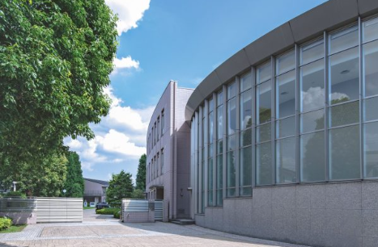
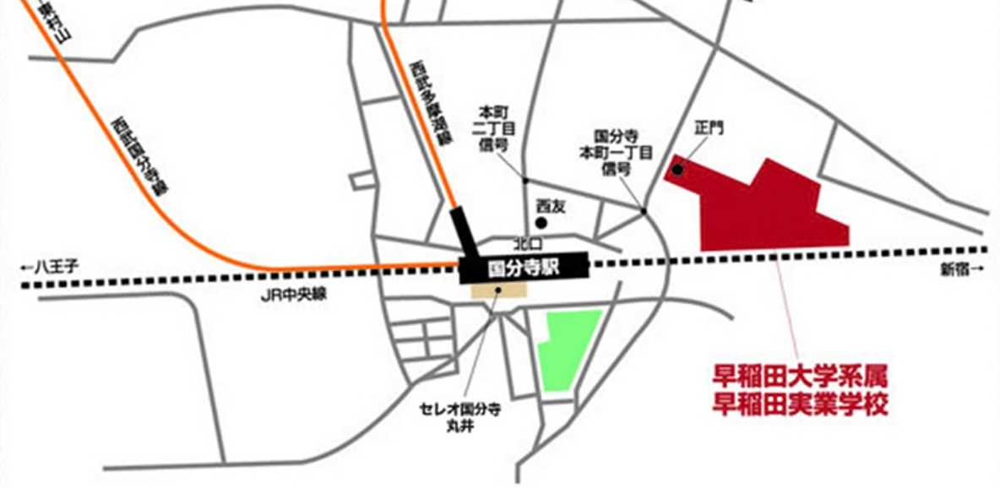

学校概要

早稲田実業学校高等部は、早稲田大学の系属校です。
学業と部活動の両立を重視し、生徒の自主性や挑戦する姿勢を育てています。
交通アクセス
住所：〒185-8505 東京都国分寺市本町1-2-98
TEL：042-300-5151（代表）
交通：JR国分寺駅・西武線国分寺駅 北口より徒歩5分


早稲田実業学校高等部は、早稲田大学の系属校です。
学業と部活動の両立を重視し、生徒の自主性や挑戦する姿勢を育てています。
住所：〒185-8505 東京都国分寺市本町1-2-98
TEL：042-300-5151（代表）
交通：JR国分寺駅・西武線国分寺駅 北口より徒歩5分
